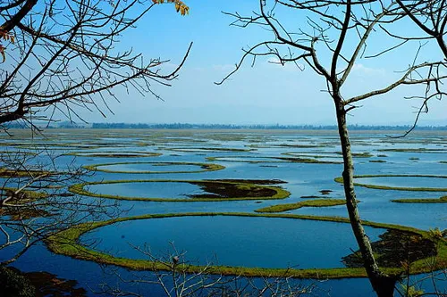
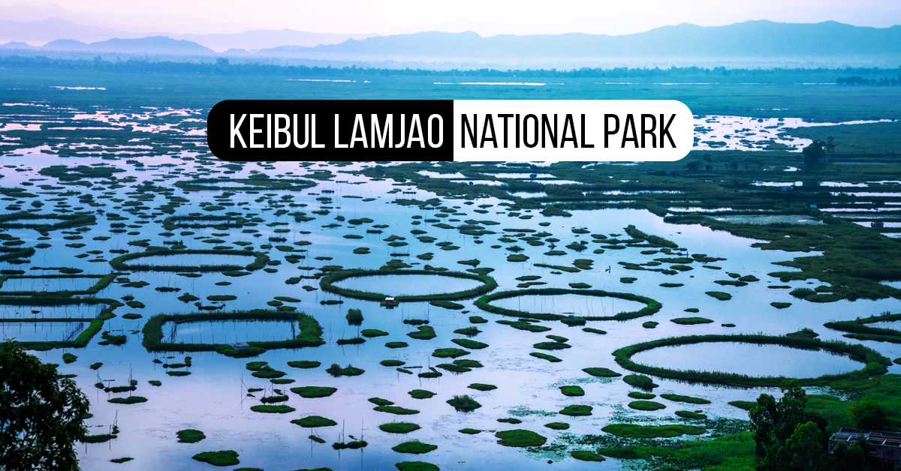
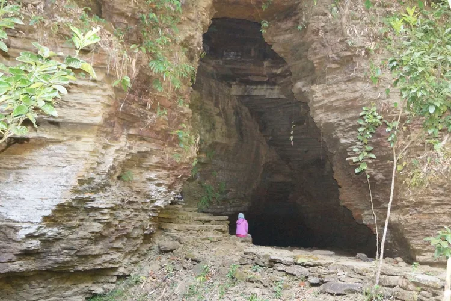
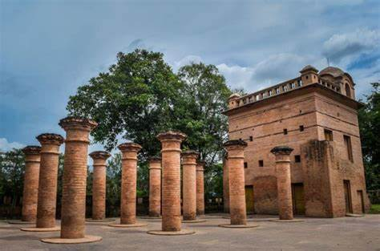
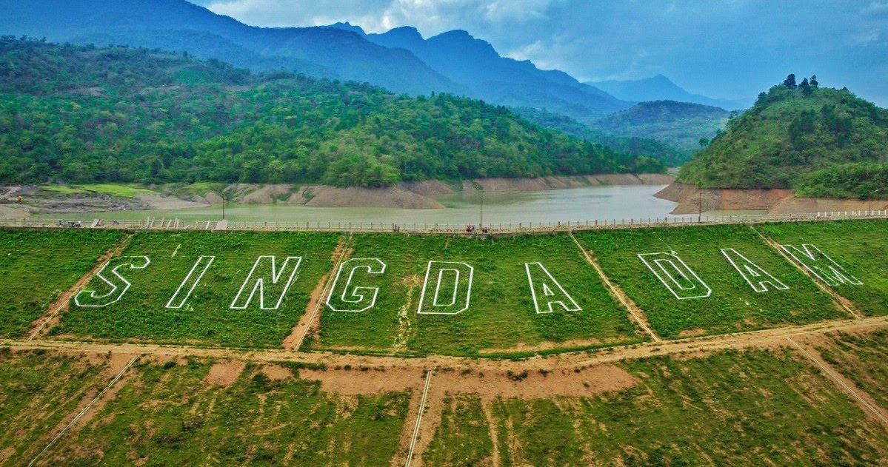
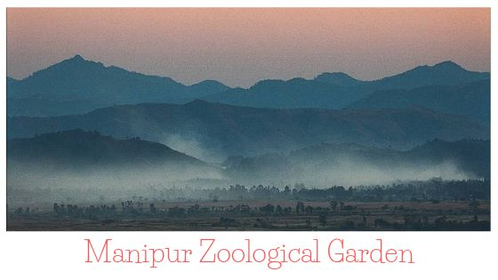
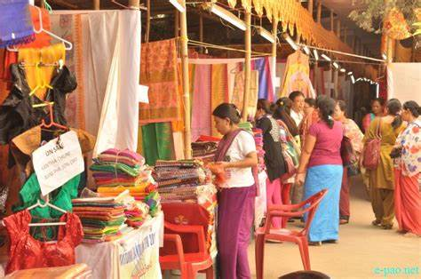
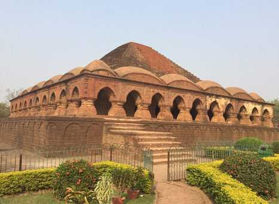
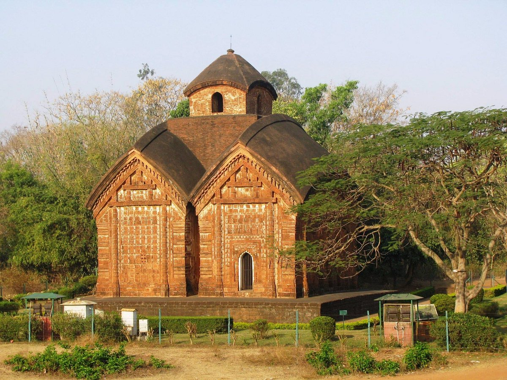

The pride of Northeast India, Manipur is blessed with nature's bounty and numerous sightseeing options what will surely make your trip memorable. Here we have picked the best tourist attractions in Manipur to help you know about each place.
-
Loktak Lake - The Only Floating Lake In The World

-
Keibul Lamjao National Park - Explore The Wilderness

-
Tharon Cave - For Thrill And Fun

-
Kangla Fort-Speaking Of Regal Heritage

-
Singda Dam-Scenic And Serene

-
Shree Govindajee Temple - The Beautiful White Dome Structure

-
Manipur Zoological Garden - Must-Visit For Travellers Of All Kinds

-
Manipur State Museum - Discovering Manipur's Rich Legacy

-
Ima Keithel Woman's Market- Unique All-Woman Bazaar Of Manipur

-
Rasmancha - Good Place For Experience Seekers

-
Jorebangla Temple - Boasts Of Amazing Architectural Design
